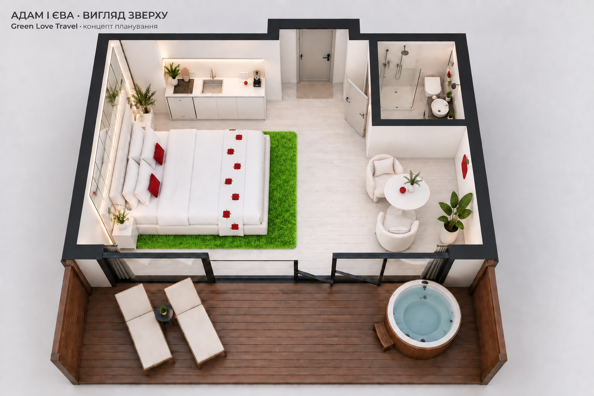

GREEN LOVE TRAVEL · COMFORT №1
Адам і Єва · Вигляд зверху
Comfort · тільки 2 дорослих · 18+
Без дітей і додаткових місць. Необхідний комфорт, доступне виконання, власна тема.
Студія · кухня · окремий санвузол · вхід · приватна тераса

Оновлене оформлення · 09.09.2026. Білі меблі, червоні яблучка, дзеркала, рослини та яскраво-зелений килим із фактурою трави. Інтер’єрний ракурс